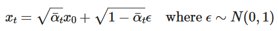
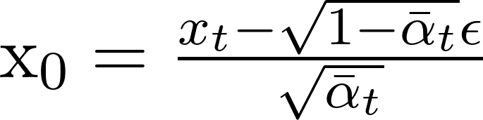
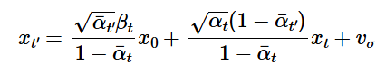
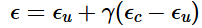

Part A: The Power of Diffusion Models!
Overview
In the first part of this project I create interesting images and optical illusions using diffusion models, implementing variations of diffusion sampling loops.
Part 0: Setup
We use DeepFloyd IF for all the images generated in this part of the project, accessed via Hugging Face. It consists of 2 stages, the first of which produces images of size 64 x 64, and the second which takes those outputs and generates images of size 256 x 256.
I upsample all of the generated images in the second half of part A to 256 x 256 if they are not already 256 x 256, and use a random seed of 180 for all of the proceeding generations.
Below are the generated images for 3 prompts to the model with num_inference_steps = 5 and num_inference_steps = 20 for both stages.
num_inference_steps=5
num_inference_steps=20
The images match the text prompts pretty well, even for a small number of inference steps, however the quality of the output varies based on the number of inference steps. There are visible noise artifacts from the generations with a small number of inference steps due to the upscaling (second stage) not being run for enough iterations. In addition, the images generated do not look very realistic (the proportions of the man's face are off as well as the number of fingers on his hand, as well as the rocket's flames being inconsistently drawn) which is probably due to the first stage not being run for enough inference steps. Larger inference steps seem to fix this, however the resulting images seem more cartoonish.
Part 1: Sampling Loops
We can start with a clean image x0 and iteratively add noise sampled from a Gaussian distribution for each timestep t until we end up with pure noise at timestep T. A diffusion model learns to reverse this process, given a noisy xt and timestep t it predicts the noise in the image. With this we can estimate the initial x0 or remove part of the noise, giving us xt-1. For DeepFloyd models, T=1000, and there are particular noise coefficients alpha bar t that dictate how we should add noise.
1.1 Implementing the Forward Process
In the forward process, we add noise to an image following the above equation for t from 0 to 999. This gives us progressively more noisy images, as shown below (not upscaled).


1.2 Classical Denoising
We can attempt to denoise the image by convolving it with the Gaussian kernel, effectively blurring it. This works somewhat, but does not look very nice. I use a kernel size of 7 and sigma of 2 for the Gaussian kernel.
1.3 Implementing One-Step Denoising
We can use the pretrained DeepFloyd model's stage 1 denoiser to predict and remove the noise added to the image in a single step. We can solve the equation in the previous section for x0 and use this to scale and subtract the estimated noise:
The resulting images are displayed below for t=250, 500, and 750:
We can see that the denoising UNet does a lot better of a job of projecting the image onto the manifold of natural images, although more of the details are hallucinated the more noisy the original image is.
1.4 Implementing Iterative Denoising
Diffusion models work better when denoised iteratively. We can skip some steps to speed up inference, stepping from T=990 to T=0 in steps of 30. The update rule taking the stride into account is below:
t' is the next timestep (less than the current timestep t), alpha t = alpha bar t / alpha bar t', beta = 1 - alpha t, and x0 is the current estimate of the clean image using the equation for x0 in section 1.3. v sigma is the random noise DeepFloyd predicted.
The results are displayed below with noise from i_start = 10 and timestep[10] and compared to the previous 2 methods we tried above.
We can see that the iterative generation produces a higher quality image with more details, however most of these details are hallucinated.
1.5 Diffusion Model Sampling
We can also repeat the iterative process in 1.4 and denoise images from randomly sampled noise and i_start=0, effectively projecting the noisy images onto the manifold of images learned by the model. We use a "null" prompt that doesn't have any specific meaning, "a high quality photo", in the following generations from random noise (upscaled):
1.6 Classifier-Free Guidance (CFG)
The generated images are somewhat nonsensical. To improve image quality at the expense of image diversity, we implement Classifier-Free Guidance. We compute a conditional and unconditional noise estimate epsilon c and epsilon u, and set our new noise estimate to be:
Where gamma is a scaling factor. We set gamma = 7 for the following generations, and use a nuill prompt of "" for the unconditional guidance noise estimate. The upscaled results are displayed below:
1.7 Image-to-image Translation
We can make edits to an existing image by taking an image, noising it, and forcing it back to the image manifold without conditioning, following the SDEdit algorithm. We run forward with starting indices of [1,3,5,7,10,20] and apply it to the Campanile image, as well as 2 pictures I've taken (one of Osaka castle and another of me and my friends), displaying the upsampled results below (original images are shown at 256x256 resolution for comparison but they are inputted to the model as 64x64):
1.7.1 Editing Hand-Drawn and Web Images
We can use the above procedure to project nonrealistic images onto the natural image manifold. Displayed below are 1 result from the Internet (Osaka from Azumanga Daioh) as well as 2 of my own sketches.
1.7.2 Inpainting
We can direct where the model should hallucinate new information by using a binary mask with the original image. Given an image x_orig and a binary mask m, we create a new image with the same content where m is 0 and new content where m is 1. We use same diffusion denoising loop except updating xt with the following after every step:
Notably, upscaling ends up modifying features from the original image. In general, I believe that this is helpful in making a more cohesive image, however in some cases we do not want this to happen. In Part 2: Bells and Whistles I examine using a binary mask and our old friend Laplacian Blending with the 256x256 image and the upscaled image to keep details from the original image.
1.7.3 Text-Conditional Image-to-image Translation
We repeat the process in 1.7 and 1.7.1, perturbing the images with noise, except this time we guide it with a text prompt "a rocket ship" instead of "a high quality photo" to guide generation towards the image subspace of rockets.

1.8 Visual Anagrams
We now proceed to make optical illusions using our diffusion models. In this section, we create an image that looks like one prompt but when flipped upside down looks like another prompt. In order to do this, we compute 2 separate noise estimates using the first prompt and the flipped image with the second prompt and average them t:
When we upscale the images, we use the "null" prompt "a high quality photo".
1.10 Hybrid Images
We can create hybrid images in a similar process to 1.8, by combining noise estimates. This time, we perform a lowpass filter (convolve with gaussian) for one prompt's noise estimate, and a high pass (laplacian filter) of the second prompt's noise estimate: